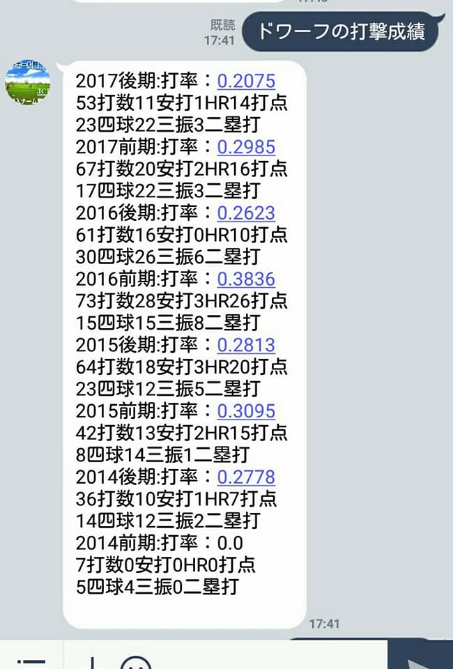
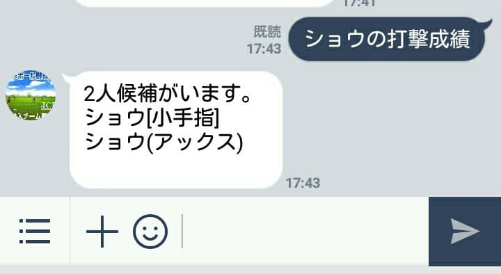
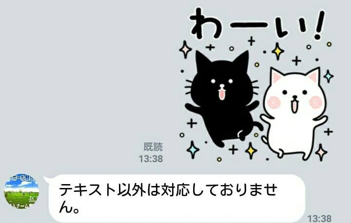

How to use?
コマンドは現在２つです。
"[選手名]の打撃成績" あるいは "[選手名]の投球成績" と入力すると
選手名を完全一致で検索します。 
完全一致検索で見つからなかった場合は「もしかして：」あいまい検索で候補を表示します。 
現在、テキストメッセージ以外には対応しておりません。 
補足
Line messaging APIのフリープランなので応答しか返しません。
応答がないときは開発中でサーバを止めているか、
サーバ側でエラーが発生しているときです。
その際はエラー日時を添えて問い合わせしていただけると対応します。(どのようなメッセージを送ったか等)
要望なども前向きに検討しますのでお気軽にお問合せください。
リリース履歴
1/20 初版リリース。1/25 バグ修正。